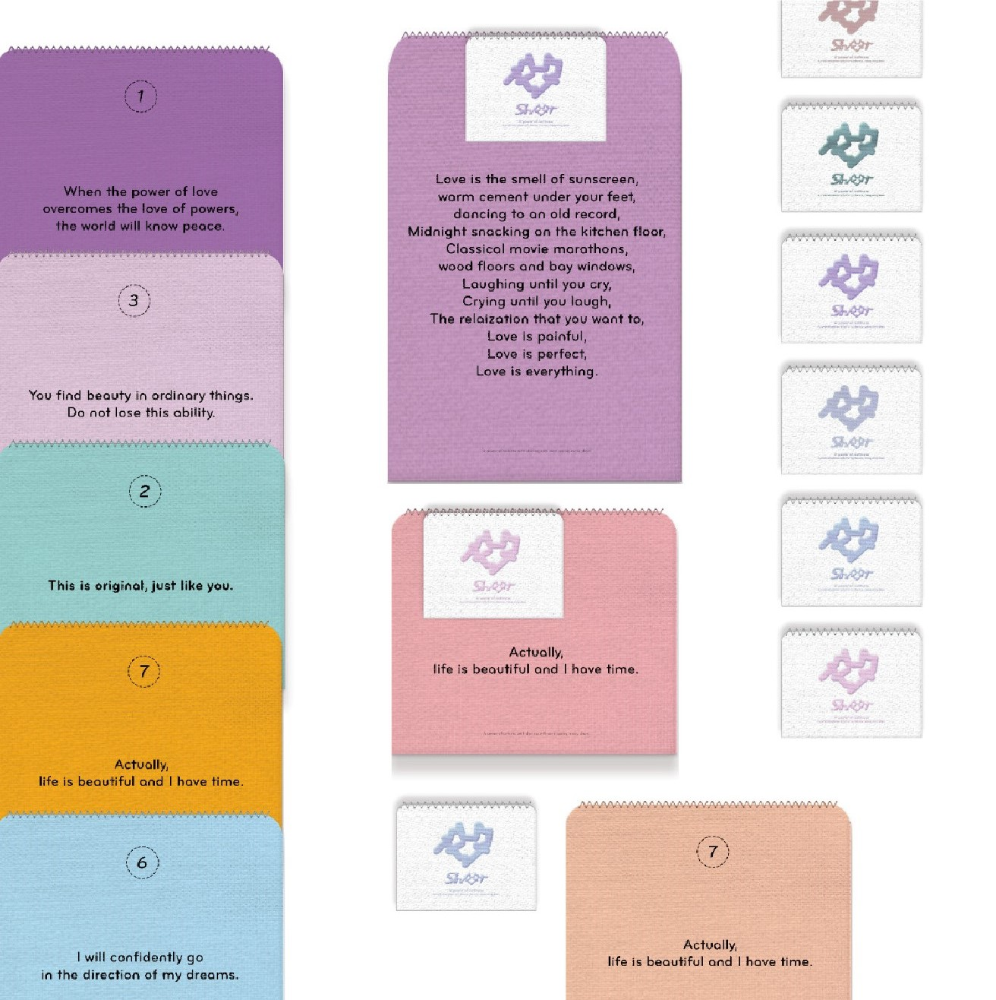
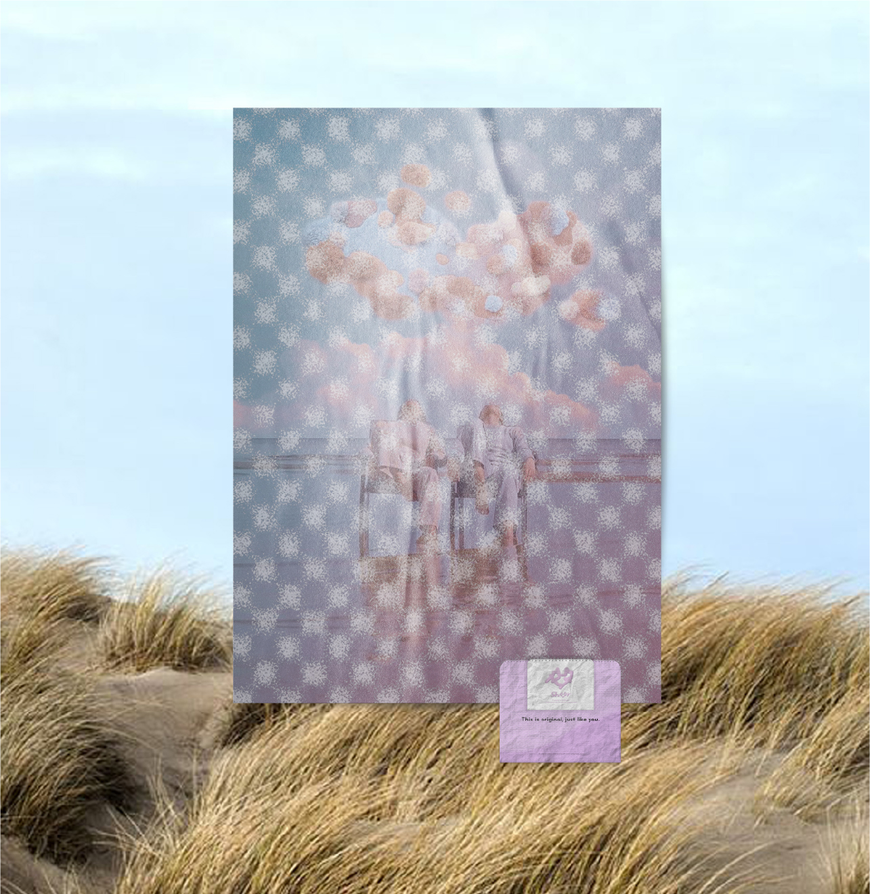
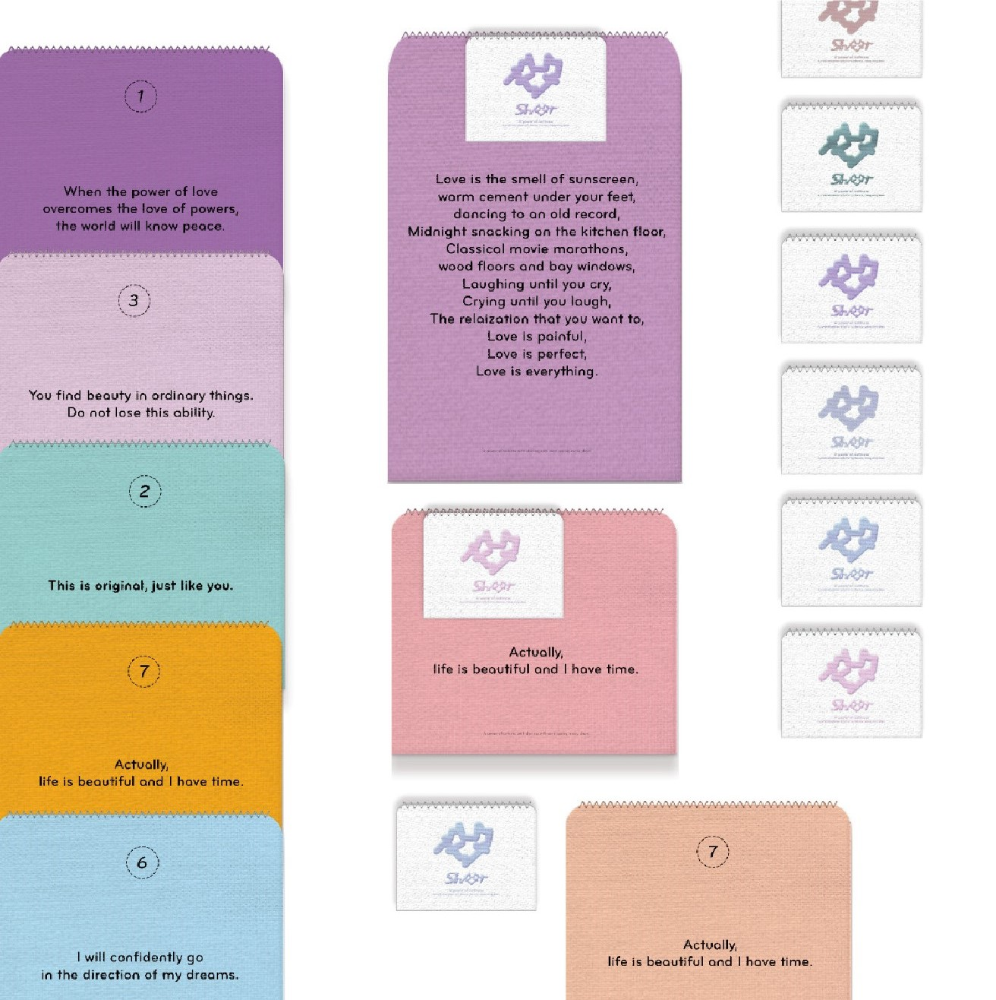
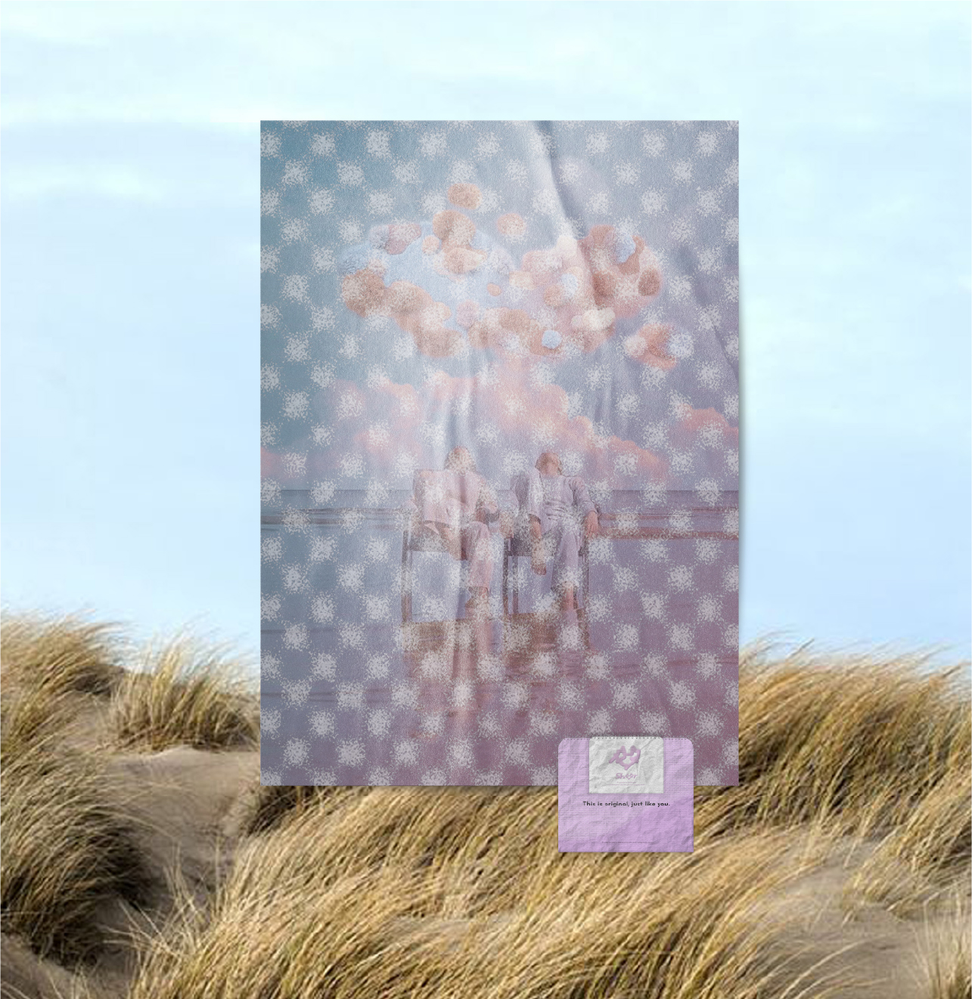

How did you end up in Europe?
At the age of 21,
after going through academic pursuits that did not
align with me, I became an English instructor at an academy teaching
middle and high school students. I believed that studying English
would help me solidify the dream of Europe that had been vague since
my childhood. However, being curious beyond the given textbooks, the
role of an English teacher felt dull to me, so I embarked on my
first solo trip to Europe.
Although I didn't know much about Europe, I first arrived in the
'France' that I often heard about in my childhood. I visited some
École des Beaux-Arts in France and struck up conversations with people there.
While staying at the house of an art student named Juliet in the
city of Lyon, I decided to study art in Europe after talking all
night about art and Europe. Although I didn't have the opportunity
to visit the Netherlands directly, Juliet, through friends, was
well-informed about Dutch design, art, and life. Intrigued by the
experimental and artistic design of the Netherlands and its
international and English-friendly environment, I applied to the
Graphic Design program at KABK after returning from my trip to
France.
What do I pursue meaning?
At the age of 26,
every year-end, I take some time to reflect on the
year by quietly enjoying a half-body bath. In the midst of busy
days, it is challenging to find time for in-depth contemplation of
long-term goals or values. However, during the year-end, I take a
few days to write down the ideas in my mind on a large A0-sized
canvas, organizing my thoughts. Clear values enable me to make
decisions that are true to myself in various situations, so I try to
summarize them as a motto for the new year and write them on the
window to remind myself. In 2024, I plan to engrave the following
meanings more deeply:
1. Choose work that benefits people.
2. Nothing can be done alone. Be grateful to those who help you.
3. Have the courage to prepare for new challenges.
4. Pay attention to criticism and obstacles from others.
5. Always maintain a humble heart and remember that there is nothing beneath you.
6. Concentrate on long-term goals.
7. Keep a warm heart and a cool head at all times.


 


